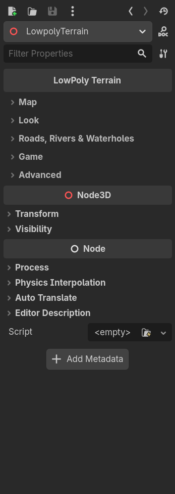
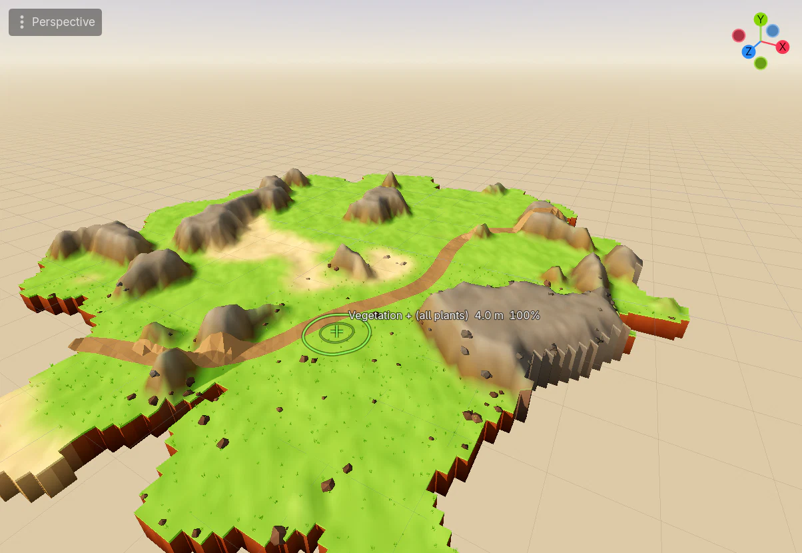

Guide
Everything the plugin does, in the order of a first map. Hover any setting in the Inspector for its own explanation. For a picture of each part of the plugin's interface, see the editor tour.
Installation
- The
addonsfolder of the repository holdslowpoly_terrain_editor(plugin.cfg,plugin.gdand its sub-folders: core, styles, editing, mesh, materials, generation, runtime, biomes, ui). Copy the whole folder. - Put it in your project's
addons/folder (create it if needed). - In Godot: Project > Project Settings > Plugins, enable Lowpoly Terrain Editor.
Requires Godot 4.7 (developed and tested with 4.7.2). Works with the Forward+, Mobile and Compatibility renderers.
Your first terrain
Create a 3D scene (e.g. a Node3D), select it and click New Terrain in the
3D editor menu bar.

The new terrain uses the Senegal Savanna biome (Inspector > Look > Biome to change it) and is empty: the 3D view says so until you drag in it to add ground (Ground is already active), or click Generate Map in the Inspector.
- Ground you paint stays bare: add grass, trees and props afterwards with the Vegetation tool (one thing at a time, nothing to compute while you shape the ground). Generate Map grows them on the whole map it makes.
- The ground is walkable at once (Inspector > Game > Walkable Collision, on for new and generated terrains; tick it on a terrain made before this version if your player falls through).
Tools and keys
The tools are 7 icons in the 3D editor menu bar, shown once a terrain is selected (hover one for its name). Undo / Redo: Ctrl+Z / Ctrl+Shift+Z.

| Tool | Drag | Ctrl + drag |
|---|---|---|
| Ground | Adds ground in the style picked in the list next to it (the biome's ground styles; "Custom" = your own colours in Advanced > Custom Ground Style). | Removes ground, and the roads, rivers and waterholes under the brush. |
| Relief | Raises the ground. | Digs. |
| Flatten | Flattens to the height under the click. | |
| Road | Draws a road that follows the ground. | |
| River | Draws a river that carves its bed. | |
| Waterhole | One click places a dried waterhole. | |
| Vegetation | More plants (or one tree / prop per click). | Fewer, then none. |
Keys in the 3D view, with a tool active
| Ctrl + drag | Inverse tool (Ground: remove, Relief: dig, Vegetation: fewer) |
| Shift + drag | Smooth |
| [ ] | Brush size (with Road / River: width of the next road / river) |
| - = | Strength |
| Esc | Leave the tool (back to normal selection) |
| Alt + drag, right / middle mouse | Move the camera, even while a tool is active |
- A ring under the mouse shows where the tool acts and its size (inner ring = half strength). It turns orange when Ctrl+drag with Ground is over a road or river.
- Brush size and strength are remembered for the project (next editor session too).
- Rivers never flow uphill: a river drawn over a hill cuts a channel through it at the height of its lower side instead of climbing it (it still runs down a slope). Raising or digging the ground near a river updates its channel.
The Inspector
The terrain Inspector has four short sections, in the order of a first map:

| Map | Preset, seed, Generate Map. |
| Look | Biome, details, Smooth Ground, Ground Bumps, your own materials. |
| Roads, Rivers & Waterholes | What the tools draw next. |
| Game | Collision, Runtime Build, draw distance, mobile water, ground shadows, detail seed. |
Everything else is in the closed Advanced section: Terrain Size, Shading, Heights & Offsets, Custom Ground Style, Road Look, River Water, Waterhole Shape, Details (size, "Details Everywhere") and Pixel Map. Hover a section title or a setting for its explanation.
Biomes
The biome is the terrain's look: ground styles, baked shading (style blend, slope tint, ambient
occlusion, colour variation, cliff darkening), waterhole colours and what grows. Two come with the
plugin: biomes/presets/senegal_savanna.tres (dry grass, laterite, acacias, baobabs,
termite mounds, skulls; used by new terrains) and biomes/presets/temperate.tres (green).
Pick one in Look > Biome.
- Look > Edit Biome (or Advanced > Shading > Edit Ground Shading) opens it; every change shows on the terrain at once.
- A biome file is shared by every terrain that uses it. Copy Biome to This Terrain gives one terrain its own copy, stored in the scene, to change it alone (Ctrl+Z undoes it). Do this before editing a preset: the plugin's preset files are replaced when you update the plugin.
- Without a biome, Create Editable Biome puts an editable Temperate copy in the terrain.
- Scenes made with an older version are converted when opened: a terrain whose shading or waterhole colours had been tuned by hand gets its own copy of the biome holding them, so it looks the same (save the scene to keep the conversion).
The biome's detail layers say what grows, how dense, on which ground and slope. You can
make your own biomes from code too: the test project's tools/trial_biomes.gd builds
desert, snow, volcanic, tropical and autumn biomes with the built-in meshes (see the
gallery).
Vegetation

On a generated map, the biome's layers grow by themselves. On ground painted by hand nothing grows until you use the Vegetation tool (tree icon, last in the toolbar).
- Drag for more: rare layers like trees up to x25 (a real forest), grass up to x4. Painted thicker, a layer also grows on other ground, on a bit steeper slopes and at any height; never on roads, rivers, waterhole water or cliffs (per layer: Biome > layer > Advanced > Paint Relaxes Rules).
- Ctrl + drag for fewer, then none: clearings, fields, a village square.
- Shift + drag to go back to normal (the biome density on a generated map, bare on ground painted by hand). Undo works.
The list next to the tool picks what you paint: All plants (grass, shrubs, trees; rocks, gravel, termite mounds and bones stay as they are) or one layer of the biome only (e.g. Acacias, Rocks, Termite Mounds: pick them to add rocks, mounds or bones on bare ground).
- With a tree or prop layer picked, one click grows one where you click (a baobab, a termite mound...; at a cliff edge, on the flat ground next to it). Drag to plant more.
- They are spaced so they do not overlap: a click right next to one of the same kind adds none, and a thick forest keeps its trees about one crown apart (per layer: Advanced > Paint Spacing, in widths of the model, 0 = they may overlap).
- Which layers "All plants" moves: Biome > layer > Advanced > Vegetation Brush (Auto / Follow / Ignore).
- Paint for one layer is kept by its name: renaming the layer drops it.
Waterholes
The Waterhole tool places a dried waterhole with cracked mud on click (Ctrl+drag with Ground inside it removes it). Its settings are under Roads, Rivers & Waterholes (depth, mud plate size) and Advanced > Waterhole Shape. Its clay and crack colours come from the biome (Waterholes group), the same for every waterhole of the terrain.
Ground look and materials
- Smooth Ground (Look, on by default) blends the ground triangles together (no triangle pattern). Untick it for the faceted low poly look. Same performance either way; cliffs stay faceted.
- Ground Bumps (Look, 0.3 m on new terrains, 0 = flat) adds small bumps of about that height all over the ground, so it is not a dead flat sheet. They are written in the heights: collision, grass, trees, roads and rivers follow, and the Relief tools work on top. Changing the value only changes the bumps, never your relief.
- Ground texture: the plugin paints colours (and up to 7 textured ground styles,
blended). A plain coloured ground seen from a player's eyes looks like a smooth plastic sheet:
test_project/world/looks/ground_detail.tresis an example that adds a fine soil grain (fading out in the distance) and large soft patches on top of the biome colours.
Your game's own look
Look > Ground Material and Detail Material replace the built-in materials (toon, unshaded, palette, retro...), applied at once without rebuilding.
- The colours and baked shading stay in the vertex colours: use Vertex Color > Use as Albedo
+ Is sRGB on a StandardMaterial3D, or read
COLORin a shader (convert it from sRGB). - Ground Material = untextured ground, cliffs and waterholes (textured styles keep their texture). Detail Material = every detail layer except your own models and custom meshes with "Use Mesh Materials". A custom Detail Material has no built-in wind unless its shader moves the vertices. Roads and rivers keep their own materials.
- Examples (game side, not in the plugin) in
test_project/world/looks/: ground_toon, ground_unshaded, detail_toon, detail_unshaded, detail_toon_wind with its shader, andoutline.tscn(cartoon outlines as a post-effect, put it under your Camera3D).
Generate Map
In the terrain Inspector, Map: pick a Map Preset (Senegal Savanna, Temperate Island), set a Map Seed and click Generate Map. Undo restores the previous terrain.
- With no preset picked, Generate Map uses the preset of the terrain's biome, else the first one.
- Custom Recipe... at the end of the list takes your own recipe file. Duplicate a recipe to tune it: plateaus, lowlands, ground patches, border hills or cliffs, rivers, tracks, waterholes.
- Same recipe + seed = same map. You can keep editing the map by hand afterwards.
- If the map is not on screen, the camera moves to show all of it (same view angle).
Pixel maps
One pixel = one terrain cell, from 1 x 1 to 256 x 256 pixels:
White #FFFFFF (or transparent) | Empty |
Green #00FF00 | Ground |
Red #FF0000 | Raised ground |
Blue #0000FF | Lowered ground |
Drop the image in Inspector > Advanced > Pixel Map > Source Image and click
Generate from Image. You can paint pixel maps in any paint program with these 4 pure
colours, or use the Pixel Map Editor (in the browser, works
offline once open): generate maps from a seed (island, archipelago, continent, central lake, valley,
plateau, with the share of each colour), retouch them with pencil, bucket, shapes and mirror, then
Export PNG. Its source is in tools/pixel-map-editor.
Your own models
Trees, huts, rocks, props made in Blender or bought: import the file in Godot (.glb,
.gltf, .blend, .fbx, or a .tscn scene), then Look > Edit
Biome > Detail Layers > add a layer (or open one) > Mesh > drag the file into
Model.
- It is drawn with its own materials and textures, at its real size in metres (Shape > Scale to vary it), standing on the bottom centre of the model ("Keep Model Origin" to use the model's own origin instead).
- The whole model becomes one mesh: still one draw call per material and chunk, however many copies.
- Give it a name: it appears in the Vegetation list, so you can place it by clicking (rare layers) or paint it. Set Collision > Collision Radius for trees or buildings the player must not walk through.
- Big flat-bottomed models on slopes: lower Placement Rules > Slope Max, or use Advanced > Sink.
- A plain Mesh resource still goes in Mesh (size in terrain cells).
In game
The terrain gets a _LowpolyTerrainRuntime child. Keep it: it unpacks the terrain data
stored compressed in the scene, rebuilds what the scene does not store (spread over frames), streams
big maps around the player, and gives trees, baobabs and termite mounds a collision (detail layers
with a Collision Radius).
@onready var runtime := $LowpolyTerrain/_LowpolyTerrainRuntime
func _ready() -> void:
if runtime.is_ground_ready:
_spawn_player()
else:
runtime.terrain_ready.connect(_spawn_player) # ground + ground collision exist
func new_level() -> void:
runtime.build(randi()) # with "Generate Map" ticked on the runtime node- Tick Generate Map on the runtime node to build a new map from its recipe + seed when the game starts (procedural levels).
- Runtime Build (Inspector > Game) chooses what the scene file stores: All at runtime (default: only the terrain data, a few hundred KB; meshes, details, roads and collision are rebuilt when the scene opens), Details at runtime, or Save everything (biggest scene, fastest loading).
- With Save everything, most of the size is the saved meshes, details and collision: about 19 MB of text for a 193 savanna map, against 160 KB with All at runtime.
- Tip: save big maps as
.scn(binary) instead of.tscn: about 5x smaller and 10x faster to open.
Map edge
The plugin builds the terrain only; what lies past the border is up to your game.
- FPS / third person: a far landscape. Example:
test_project/world/map_horizon.gd, a MapHorizon child of the terrain with distant ground, hills, trees and invisible border walls. Or let the map recipe close the map with border hills. - Top-down: keep the camera inside the map and put a large plain ground (same colour) under it.
- Island: water all around.
Lighting and phones
The plugin does not set up the sky, fog or sun: each game lights its scenes its own way. For the
savanna look, drop test_project/world/savanna_sky.tscn (WorldEnvironment + warm sun 24
degrees high, so the ground facets stand out) in your scene, or use
test_project/world/savanna_environment.tres on your own WorldEnvironment.
- On phones, sun shadows cost the most: give your sun 2 shadow splits and a 50 m Max Distance,
like
savanna_sky.tscn(a third fewer triangles drawn than 4 splits / 80 m, still sharp close by). - For low-end phones, untick Game > Ground Casts Shadows: hills no longer cast shadows on the plain (trees, rocks and props keep theirs), about 20% fewer triangles drawn and roughly 10% less GPU time on the savanna map.
- Phones always get river water without screen-copy refraction.
- Roads and rivers cast no shadow (they lie flat on the ground).
Wind
Grass, shrubs and trees (built-in meshes) sway in the wind, in the editor and in game; rocks, mounds and bones stay still. From code:
MaterialFactory.set_wind(Vector2(direction_x, direction_z), strength) # 0 = calm, 1 = default, 2 = strongBuilt-in props
The built-in props (acacia, baobab, termite mound, zebu skull, dead tree, shrub, rocks, grass) are
modelled in Blender. tools/blender/lte_props.py rebuilds them from code (paste it in
Blender's Scripting tab, then build_all() and export_glb(...)), and
tools/blender/glb_to_gdscript.py turns the GLB into
addons/lowpoly_terrain_editor/mesh/detail_mesh_data.gd.
A scene saved with "Save everything" keeps the props it was saved with until its details are rebuilt (Generate Map, or any change to the biome). With "All at runtime" they are rebuilt when the scene opens.